Ventas Omnicanal (Físicas y Web)
Módulo completo de punto de venta que permite gestionar transacciones tanto en el establecimiento físico como a través del portal web. Ambos canales están sincronizados en tiempo real para mantener la coherencia del inventario y la facturación.
Problema: Las ventas físicas y web estaban desincronizadas, generando "overselling" (venta de productos sin stock).
Solución: Unificación en un canal omnicanal con sincronización de base de datos en tiempo real.
Resultado: Eliminación del 100% de las discrepancias de inventario y reducción drástica de errores manuales.
- Registro de ventas en mostrador y en línea
- Facturación electrónica integrada
- Historial completo de transacciones por cliente
- Sincronización en tiempo real entre canales
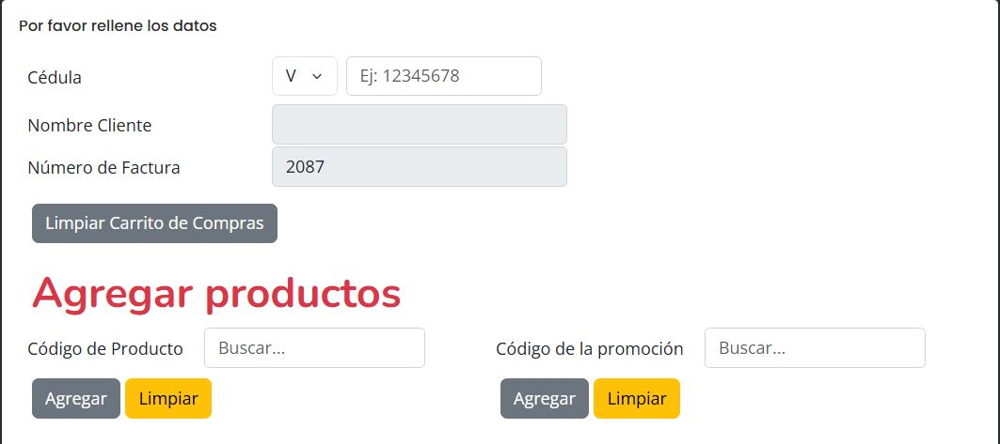
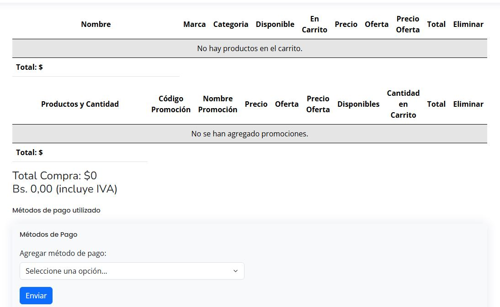
Gestión de Compras y Recepción
Control total del ciclo de compras: desde la generación del pedido al proveedor hasta la recepción física de los productos en el almacén. En este punto se gestiona la merma de recepción — si la cantidad recibida es menor a la solicitada, el sistema registra automáticamente los faltantes.
- Registro de proveedores y condiciones comerciales
- Órdenes de compra con seguimiento de estado completo
- Recepción de mercancía con control de merma (faltantes)
- Vinculación automática entre compra recibida e inventario
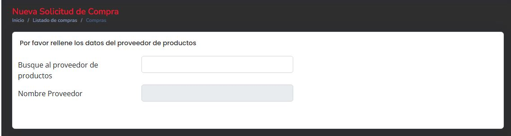
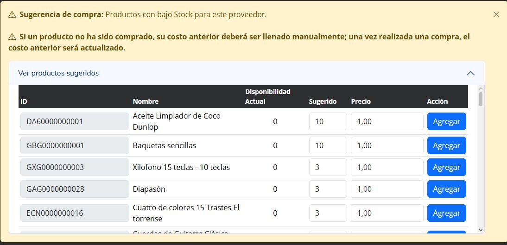
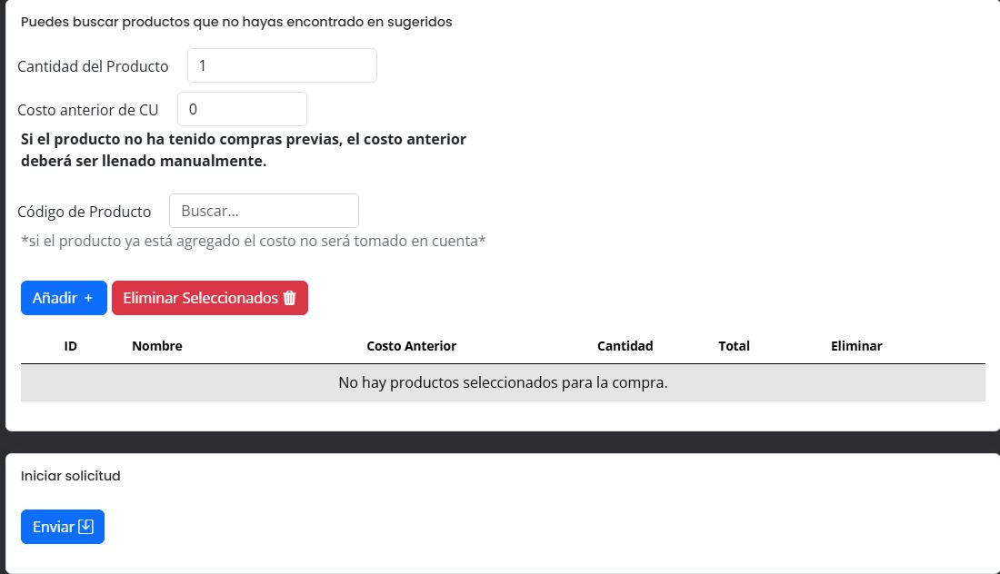
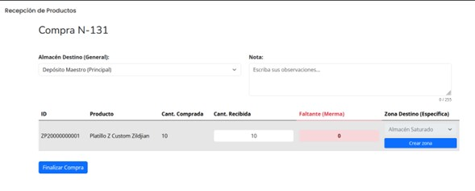
Inventario Avanzado (FIFO) y Gestión de Almacenes
Sistema de control de inventario basado en el método FIFO, garantizando la correcta rotación de productos. Incluye gestión de múltiples almacenes divididos por zonas, con control de capacidad por ubicación (Zonificación) para optimizar el espacio y la logística interna.
Problema: Pérdida de valor por productos antiguos no rotados y logística interna desorganizada.
Solución: Implementación del metodo FIFO y control volumétrico atraves Zonificación.
Resultado: Trazabilidad exacta de cada producto, reducción de productos obsoletos y optimizacion del proceso de inventario.
- Método de valoración FIFO
- Gestión de almacenes y zonas con capacidad por ubicación
- Control de cantidad de productos asignados a cada zona del almacén
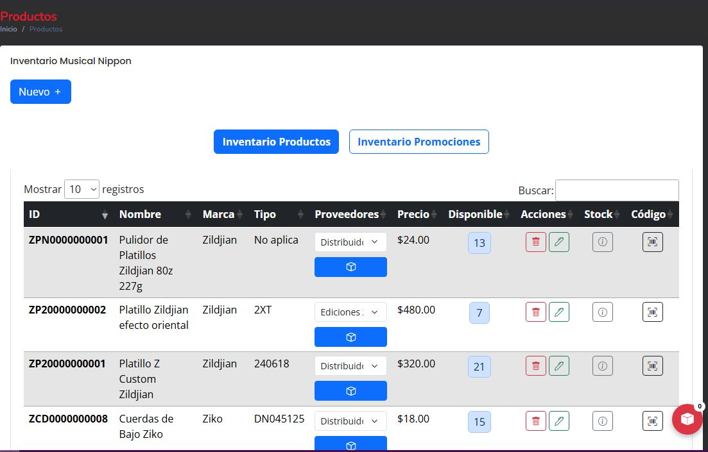
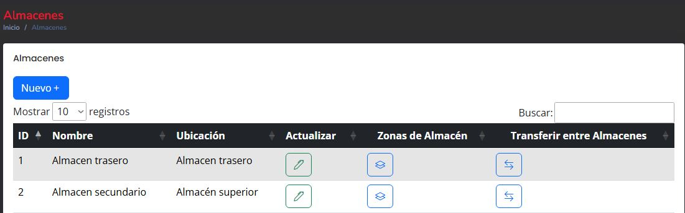
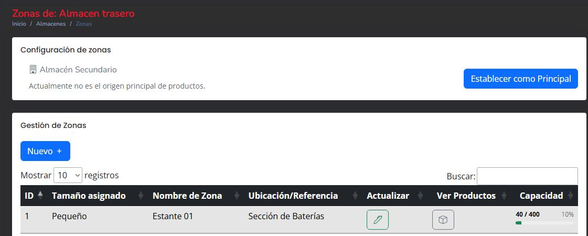
Marketing: Promociones, Ofertas y Creación de Posts
Panel de marketing integrado que permite crear y gestionar promociones, ofertas temporales y publicaciones (posts) que se reflejan automáticamente en el portal web público de la empresa.
- Creación de promociones con fechas de vigencia
- Ofertas especiales sincronizadas con la pagina web
- Editor de posts y contenido para las publicaciones de los productos en la pagina web
- Gestión y optimización de imágenes con Cloudinary
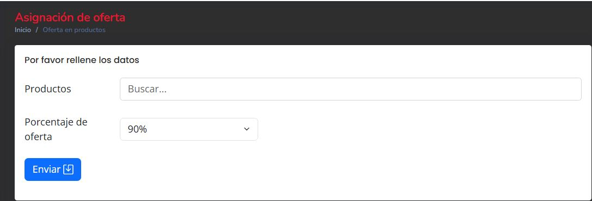
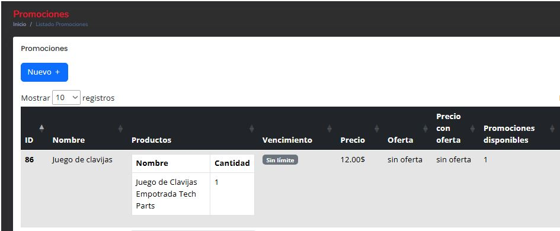
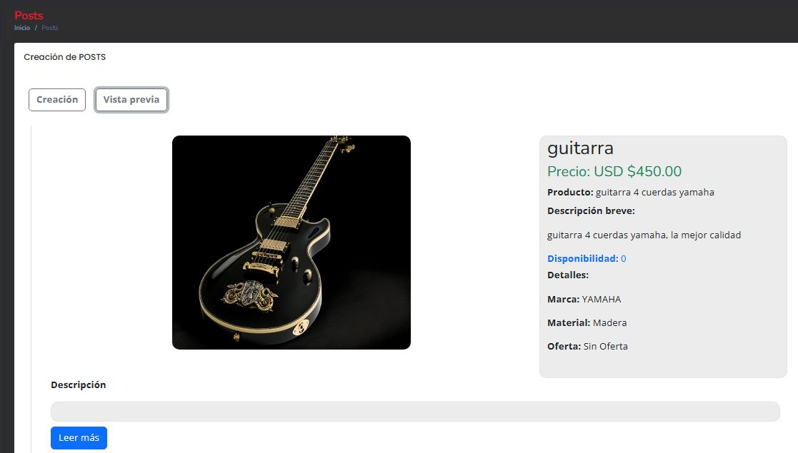
Generador de Reportes
Motor de reportes gerenciales que permite a la administración tomar decisiones basadas en datos reales. Genera documentos PDF profesionales con tablas detalladas para todas las áreas del negocio.
- Reportes de Ventas (Web, por clientes y por empleados)
- Reportes de Compras y Movimientos de Entrada & Salida
- Análisis de Productos (Más vendidos, más comprados y disponibilidad)
- Exportación en formato PDF profesional con FPDF
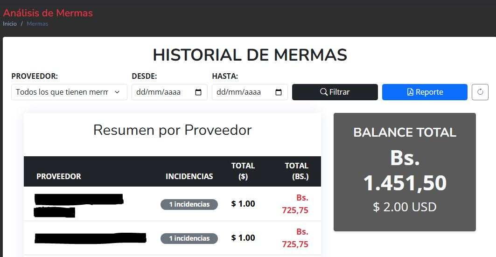
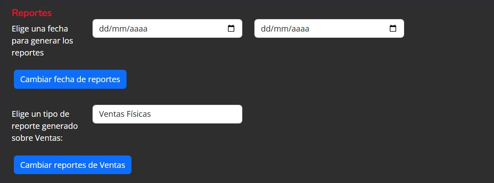
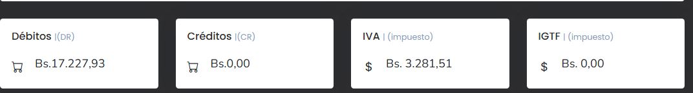
Despliegue en la Nube (AWS) y Pruebas de Estrés
Toda la plataforma fue desplegada en producción utilizando instancias EC2 de Amazon Web Services, incluyendo la vinculación de dominios reales. Durante la fase de pruebas, se inyectaron masivamente más de 9,000 registros para auditar el rendimiento estructural.
Problema: Riesgo de caída del sistema y tiempos de respuesta degradados ante un uso intensivo inesperado.
Solución: Ejecución de pruebas de estrés, identificando y corrigiendo cuellos de botella en la capa de persistencia y servidor.
Resultado: El sistema procesó la carga masiva sin colapsos, garantizando tiempos de respuesta óptimos bajo condiciones de alta concurrencia.
- Instancia EC2 con servidor Apache/Linux
- Configuración de protocolos de seguridad y red
- Dominio personalizado vinculado al servidor
- Arquitectura resiliente testeada bajo estrés
$ ab -n 9000 -c 100 https://musical-nippon.com/api/sync
Benchmarking musical-nippon.com (be patient)
Completed 1000 requests...
Completed 5000 requests...
Completed 9000 requests
Time taken for tests: 12.450 seconds
Failed requests: 0
Requests per second: 722.89 [#/sec]
$
Seguridad y Administración
El sistema cuenta con sólidas medidas de seguridad y control administrativo. Permite gestionar quién tiene acceso a qué áreas del sistema y mantiene un registro detallado de las acciones críticas para garantizar la integridad de los datos.
- Gestión de Usuarios con control de acceso basado en roles (RBAC)
- Encriptación de contraseñas y credenciales de acceso (bcrypt)
- Validación y sanitización estricta de datos de entrada (Prevención XSS)
- Protección contra Inyección SQL mediante Sentencias Preparadas (PDO)
- Auditoría completa de acciones y respaldos de base de datos
root@erp:~$ tail -f /var/log/auth.log
[OK] User 'admin' authenticated via bcrypt.
[INFO] RBAC: Granted full access to module 'Ventas'.
[WARN] Blocked SQLi attempt from IP 192.168.1.45
[OK] Data sanitization complete. No XSS detected.
root@erp:~$